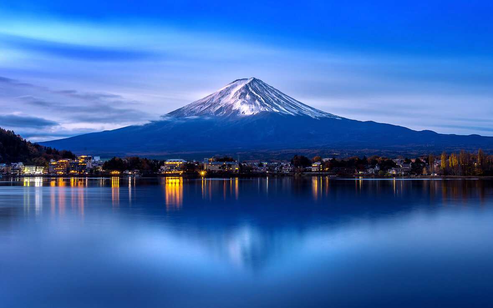
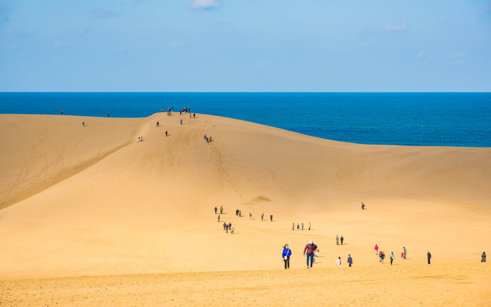
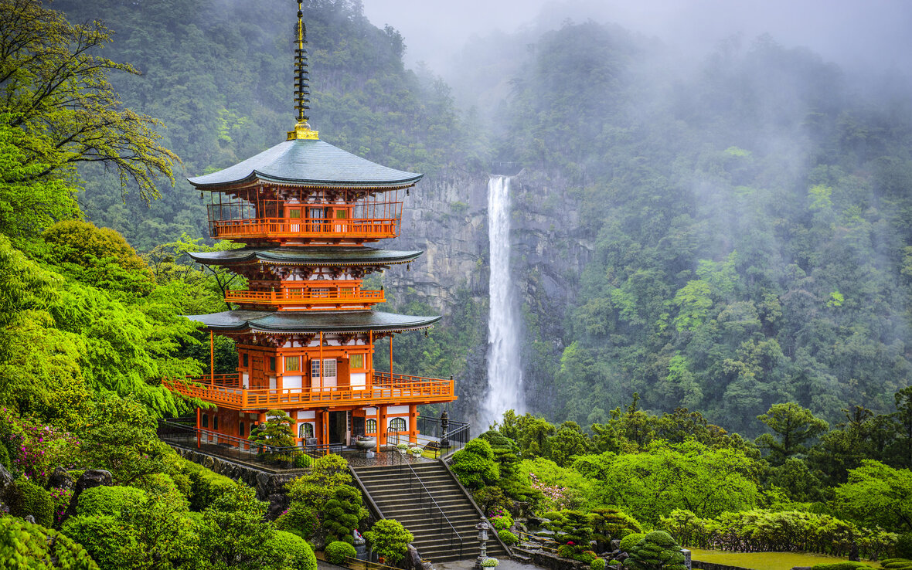
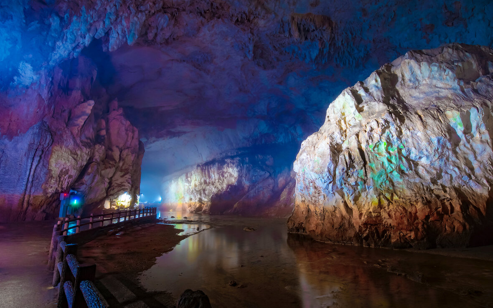
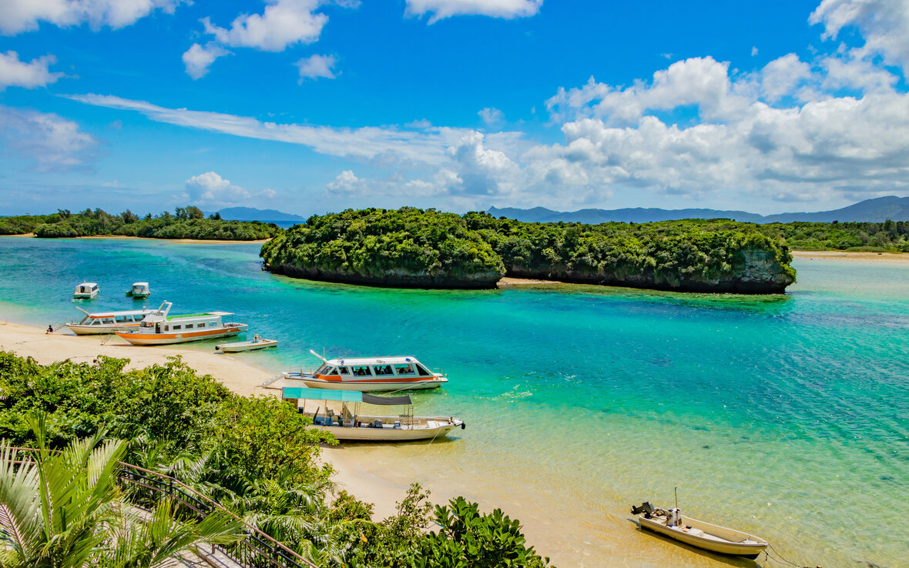
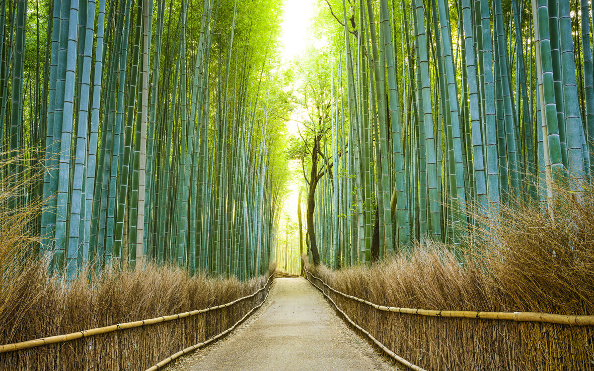
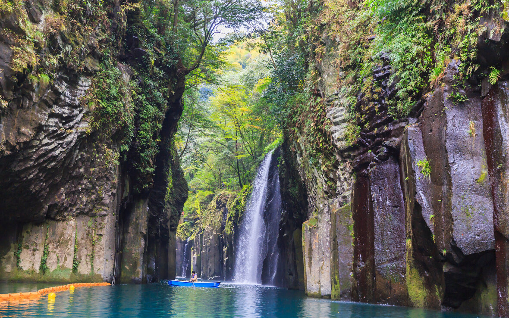

O Japão é um país insular da Ásia Oriental localizado no Oceano Pacífico. Os caracteres que compõem o seu nome significam "Origem do Sol", razão pela qual o Japão é às vezes identificado como a "Terra do Sol Nascente".
A geografia local é diversa e marcada pela instabilidade geológica, o país possui inúmeros vulcões e registra muitos tremores de terra.
A economia japonesa é a terceira maior do planeta. O país é forte nos setores de serviços diversos e na produção de bens manufaturados. O país é pioneiro no desenvolvimento de tecnologias nas áreas de transporte e telecomunicação.
Para além de tudo isto, o Japão é também um país rico em cultura e cheio de lugares fantasticos para visitar. Vamos conhecer algumas maravilhas naturais que não podes perder.

Monte Fuji
O Fuji é a montanha mais alta do Japão, com quase quatro mil metros de altura, e está entre as principais atrações no roteiro dos turistas que visitam o país. A apenas 100 quilômetros de Tóquio, ele pode até ser visto da capital em dias com bom tempo. A última erupção do vulcão aconteceu há mais de 300 anos, mas isso não significa que ele não possa entrar em atividade a qualquer momento. Musa de muitos trabalhos artísticos do Japão, o belo monte nevado cercado por denso bosque e flores rosadas mal parece ser de verdade e certamente vale a visita.

Dunas de Tottori
Quem diria que o Japão tem incríveis dunas que poderiam muito bem estar em algum deserto na África ou no Oriente Médio? Pois o país possui as incríveis Dunas de Tottori. Localizadas na costa da cidade de Tottori, são consideradas monumento nacional e não é difícil entender o porquê, afinal elas formam o único grande sistema de dunas do país, com mais de trinta quilômetros quadrados. Do alto das dunas mais altas, você pode apreciar uma vista incrível para o Mar do Japão.

Cataratas de Nachi
Na província de Wakayama, no sul do Japão, está uma das quedas d'água mais famosas do país — se não a mais famosa. Atingindo 133 metros de altura e 13 de largura, as Cataratas de Nachi formam a queda única mais alta do país asiático. O templo em frente à queda tem três andares e é acompanhado de um espaço que expõe interessantes artefatos encontrados ali.

Akiyoshido
A Akiyoshido é a maior caverna do Japão, com cerca de 10 quilômetros quadrados de grutas, peculiares formações rochosas e rios subterrâneos, com algumas câmaras que atingem até 80 metros de altura. Os visitantes podem andar por somente um quilômetro dentro da caverna, o que já é suficiente para deixar qualquer um impressionado. Há até um elevador para você poder olhar ao redor do alto. Cidades próximas, onde você pode se estabelecer, incluem Yamaguchi e Hagi.

Baía de Kabira
Quem foi que disse que o Japão não tem belíssimas praias? Localizada na ilha de Ishigaki, na província de Okinawa, a Baía de Kabira é um verdadeiro paraíso, com enormes bancos de areia branca, águas azuis e exuberante vegetação. Infelizmente, nadar não é permitido, mas só as paisagens certamente já valem a pena. Também é possível passear de barco e visitar algumas interessantes ilhotas ao redor.

Sagano
Nos arredores da famosa cidade de Kyoto, a apenas trinta minutos do centro, você encontra uma das maravilhas naturais mais únicas da lista. A Floresta de Bambu Sagano é, como o nome sugere, uma enorme floresta de bambu que impressiona pela quantidade de árvores e garante fotografias excepcionais graças à luz que atravessa entre os troncos e folhas. A floresta conta com diversas passarelas artificiais para você poder passear em meio aos bambus.

Takachiho
Para completar a lista, é claro que um fantástico cânion não poderia faltar. Localizado nos arredores da cidade de mesmo nome, o Takachiho é de fato magnífico. Formadas por uma erupção vulcânica, suas paredes de pedra parecem ter sido talhadas à mão. Para completar a paisagem, uma exuberante cachoeira cai no rio de águas azuis lá embaixo. Opções para explorá-lo não faltam: você pode pegar uma trilha de um quilômetro que o acompanha por cima, contratar o serviço de um barqueiro para um passeio inesquecível pelo rio lá embaixo ou pegar um trem turístico que para sobre a ponte de trilhos mais alta do Japão, 105 metros acima do fundo do cânion.